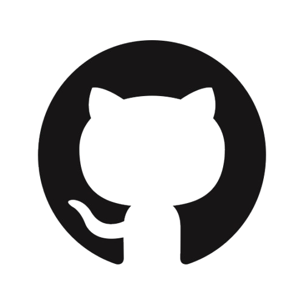

ritubarman.official@gmail.com
GitHub 
Leetcode
Hackerrank
ABOUT ME
I'm a software developer who enjoys solving real problems with smart and practical solutions. I’ve always loved building things — whether it’s a tool to track progress or a clean, user-friendly web app. Over time, I’ve picked up a strong mix of technical and soft skills: coding, debugging, thinking through logic, managing small projects, and working smoothly with others. I’m someone who learns quickly, adapts fast, and isn’t afraid to take initiative. I genuinely enjoy the process of figuring things out and improving along the way, and I’m excited to bring that mindset into a team where I can grow and contribute meaningfully.
Programming Languages: C, Python, OOPS in Java, DSA(Basic)
Frontend: HTML, CSS
Database: SQL
Tools: Git/GitHub
Project Management, Presentation Skills, Problem-solving, Self-motivate, Team Management, Strong analytical skill, Quick Learner
Guru Nanak Institute of Technology
SGPA : 9.16 (upto 1st semester)
B.Sc in Computer Science(Honours)
Maharaja Manindra Chandra College
CGPA : 7.62
Higher Secondary Examination Rahara Bhabanath Institution for girls
Percentage: 64.00
Secondary Examination
Rahara Bhabanath Institution for girls
Percentage: 73.71
2019-2022
I built an interactive dashboard using Power BI, DAX, Power Query, and Excel to analyze Blinkit's operations. The insights revealed a 25% gap in delivery efficiency, identified major causes behind a 30% decline in customer satisfaction, and showed how marketing ROI could improve by 20%. The project helped translate raw data into clear actions for better decision-making.
Certification on Computer Networks & Internet Protocol from IIT Kharagpur(NPTEL)
English (Fluent)
Bengali(Native)
Hindi (Medium)
Spanish (Level A1)